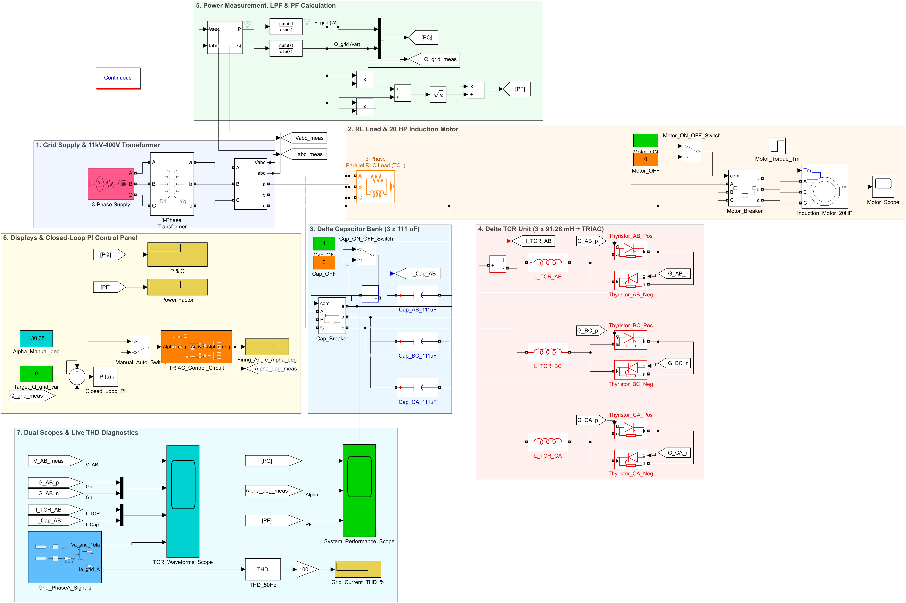
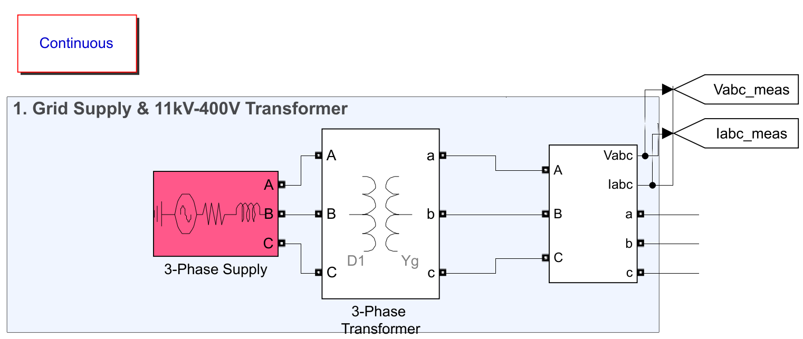
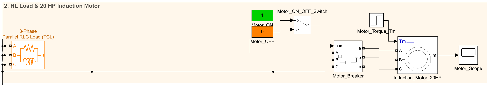
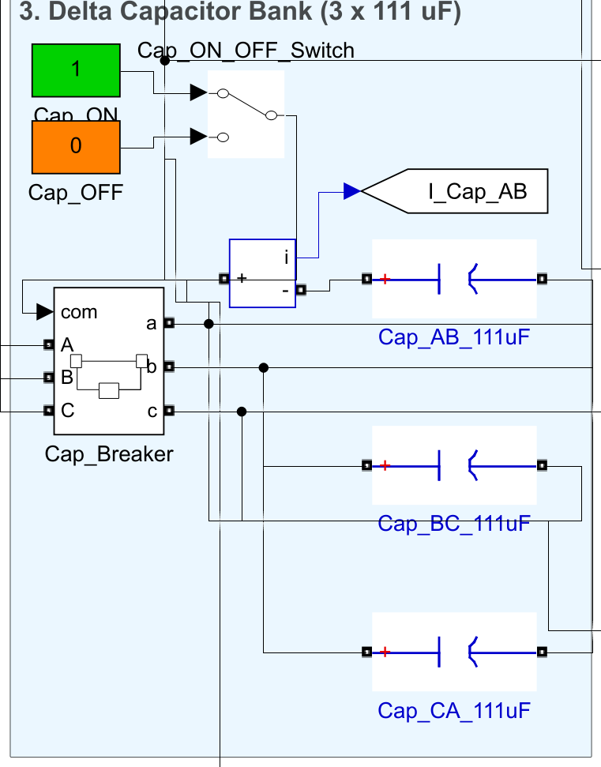
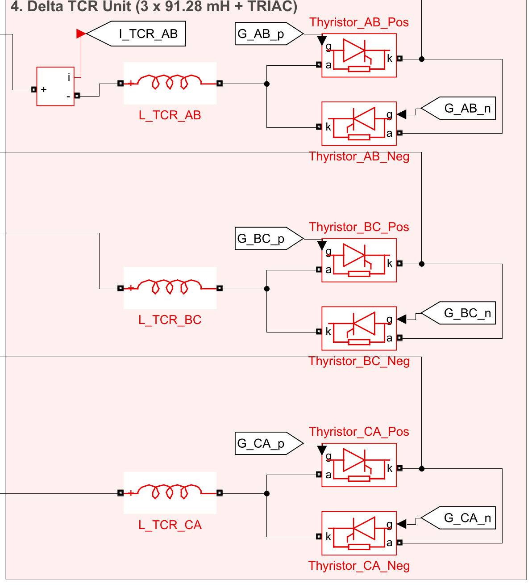
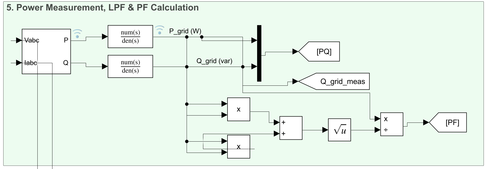
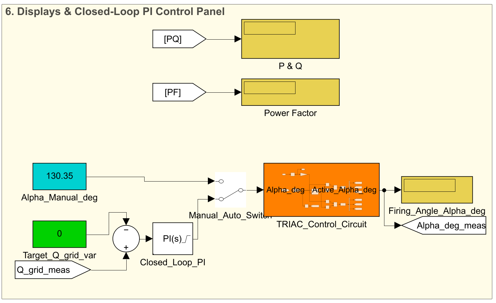
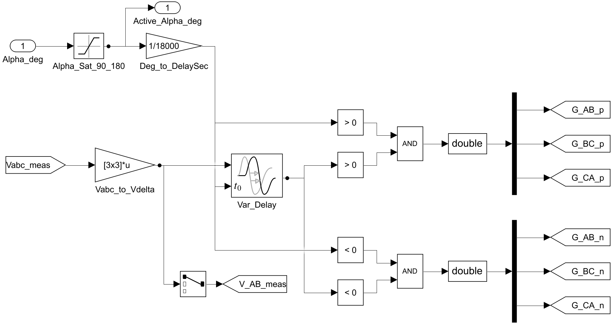
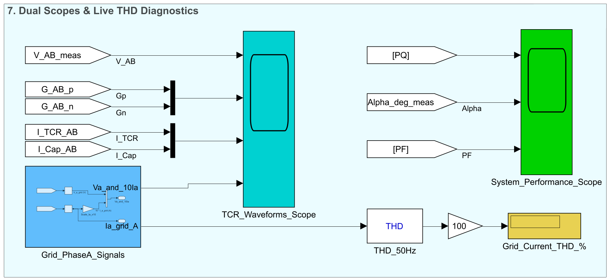
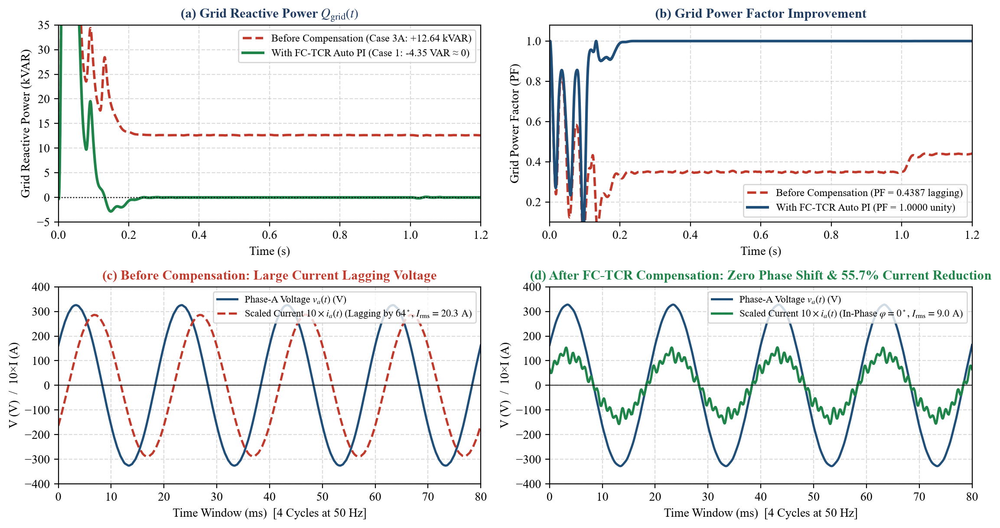

Design and Simulation of an FC-TCR SVC
for Power Factor Correction
Project Team Members
Abdel-Moaty
Abdel Moneim
Presentation Roadmap
What is Reactive Power?
The useful power consumed by loads to produce mechanical shaft torque, heat, or illumination: \(P = V I \cos\varphi\).
Required by inductive loads (induction motors, transformers, reactors) to build their magnetic fields. It oscillates back and forth between source and load: \(Q = V I \sin\varphi\).
The vector sum of \(P\) and \(Q\). Generators, transformers, and transmission cables must be sized to carry the full apparent power \(S = V I\).
The Cost of Poor Power Factor
Inductive reactive current \(I_Q\) flowing through line reactance \(X_L\) causes a direct voltage drop across transmission and distribution lines, degrading voltage stability at load buses:
For a fixed active power \(P\), a lower power factor forces the network to carry much higher total current, increasing thermal \(I^2R\) losses quadratically in cables and transformers:
Reactive current occupies transformer and cable kVA ratings without delivering real work. Utilities impose financial penalties when industrial power factor falls below \(0.90\text{–}0.92\).
Rapidly fluctuating inductive loads (such as electric arc furnaces, rolling mills, and large motor starts) draw erratic \(Q(t)\), causing rapid voltage oscillations and risk of voltage collapse.
The Solution: Local Shunt Compensation
Instead of forcing reactive power \(Q_L\) to travel all the way from utility generators through transformers and transmission lines, we connect a Shunt Compensator in parallel directly at the Load Bus.
The compensator supplies capacitive reactive power \(Q_C\) locally to the load, so the net reactive power drawn from the upstream grid drops to \(Q_{\text{grid}} = Q_L - Q_C \approx 0\).
By eliminating reactive current from the upstream feeder, total line current \(I_{\text{grid}}\) drops significantly — cutting feeder voltage drop \(\Delta V\), reducing thermal \(I^2R\) copper losses, and freeing up transformer and cable kVA capacity for useful active loads.
Evolution of Shunt Compensation Technologies
Shunt Capacitor Banks
Passive Capacitive Compensation — Fixed & Automatic Contactor-Switched Banks
How Shunt Capacitors Work
An inductive motor draws lagging current \(I_L\), whereas a shunt capacitor draws current \(I_C\) that leads voltage \(V\) by \(90^\circ\) (`\(180^\circ\)` opposed to \(I_{LQ}\)). Reactive energy exchanges locally between capacitor and motor without loading the upstream feeder.
Shunt Capacitors: Advantages & Applications
By far the most economical technology per kVAR/MVAR to supply bulk reactive power compensation across industrial plants and distribution feeders.
Dielectric losses are less than \(0.05\%\text{–}0.1\%\) of rated kVAR — giving shunt capacitors the highest electrical efficiency of all four compensation methods.
100% static installation with zero rotating parts or complex gate-drive electronics; faulty capacitor cans are easily replaced and stages can be expanded modularly.
Requires only periodic visual and thermal inspection of mechanical contactors, HRC protection fuses, discharge resistors, and detuning reactors.
Shunt Capacitors: Disadvantages & Limitations
Can only inject leading \(+Q\); cannot absorb excess inductive \(-Q\) during light-load or off-peak conditions, risking severe overvoltage (Ferranti Effect).
Switched in discrete steps by mechanical contactors/breakers taking seconds to minutes, plus a mandatory \(3\text{–}5\text{ min}\) discharge delay before re-closing any disconnected stage.
Reactive output collapses with the square of bus voltage during grid sags — losing \(51\%\) of rated kVAR at \(V = 0.70\text{ pu}\) right when voltage support is needed most.
Forms a parallel resonant circuit with grid inductance that amplifies harmonics and causes high capacitive inrush currents upon switching:
Synchronous Condenser (SC)
Rotating Synchronous Machine Operating at No Mechanical Load for Dynamic VAR & Inertia Support
Construction & Operating Principle
A 3-phase synchronous machine connected in parallel with the grid running with no mechanical shaft load at synchronous speed \(N_s\) (\(1500\text{ rpm}\) at \(50\text{ Hz}\)). An Automatic Voltage Regulator (AVR) adjusts DC rotor field current \(I_f\) to vary internal induced EMF \(E_f\).
Because a synchronous rotor has zero starting torque at \(50\text{ Hz}\), it is accelerated to synchronous speed \(N_s\) prior to breaker closure using an auxiliary Pony Motor on the shaft or a solid-state Static Frequency Converter (SFC).
V-Curve & Phasor Diagram Analysis
Plotting stator armature current \(I_a\) against DC field current \(I_f\) produces the classic V-Curve:
• Minimum Point (\(E_f \approx V\)): Unity PF (\(Q = 0\)) — draws only small active current for friction, windage & copper losses.
• Right of Minimum (\(I_f \uparrow\)): Over-excited — injects continuous capacitive \(+Q\).
• Left of Minimum (\(I_f \downarrow\)): Under-excited — absorbs continuous inductive \(-Q\).
Unlike power-electronic converters, the heavy steel rotor stores kinetic energy \(E_k = \frac{1}{2}J\omega_m^2\), providing physical Mechanical Inertia (\(H \approx 1.2\text{–}3.0\text{ s}\)) that limits Rate of Change of Frequency (RoCoF) and injects \(4\text{–}6\text{ pu}\) fault current.
Synchronous Condenser: Advantages & Applications
Continuously regulates reactive power from inductive absorption to capacitive injection via DC field current \(I_f\) with zero switching transients.
The only shunt compensator that physically stabilizes grid frequency (limits RoCoF) and supplies \(4\text{–}6\text{ pu}\) short-circuit current to trip protection relays.
Internal EMF \(E_f\) supports bus voltage immediately during grid sags; Field Forcing delivers up to \(2.0\times\) rated MVAR for several seconds during faults.
Generates zero switching harmonics (requiring no harmonic filter yards) and offers a rugged utility service life of \(35\text{–}40+\text{ years}\).
Synchronous Condenser: Disadvantages & Limitations
Limited by the large magnetic time constant \(T'_{d0}\) of the rotor field winding — too slow to track rapid cycle-by-cycle industrial load fluctuations or arc-furnace flicker.
Suffers from continuous stator and rotor \(I^2R\) copper losses, iron core losses, bearing friction, windage, and cooling auxiliary power consumption.
Rotating shaft, high-speed bearings, lube-oil pumps, brushes/exciters, and air/hydrogen/water cooling systems require frequent scheduled maintenance.
Requires an auxiliary Pony Motor or Static Frequency Converter (SFC), synchronization equipment, massive reinforced concrete foundations, and acoustic enclosures.
Static Var Compensator (SVC)
First-Generation Shunt FACTS Controller — Thyristor-Controlled & Switched Susceptance
SVC Architecture & Building Blocks
Anti-parallel thyristor valve pair at the top in series with an air-core reactor \(L_{\text{TCR}}\). Phase-controlling firing angle \(\alpha \in [90^\circ, 180^\circ]\) absorbs variable inductive reactive power \(-Q_L(\alpha)\) smoothly.
Anti-parallel thyristor valve pair switches capacitor bank \(C_{\text{TSC}}\) strictly ON or OFF at zero valve voltage (\(v_T = 0\)) to supply discrete capacitive steps \(+Q_C\) with zero inrush transients.
Series tuning reactor \(L_F\) on top of capacitor \(C_F\) absorbs \(5\text{th}\) & \(7\text{th}\) odd harmonics generated by the TCR (while 3rd harmonics are trapped in \(\Delta\)) and provides base capacitive \(+Q_C\).
TCR Firing Angle (\(\alpha\)) & Conduction Control
Delaying the thyristor gate trigger pulse from \(\alpha = 90^\circ\) (full conduction, \(\sigma = 180^\circ\)) to \(\alpha = 180^\circ\) (zero conduction, \(\sigma = 0^\circ\)) controls fundamental inductive susceptance:
In a balanced 3-phase \(\Delta\)-connected TCR, all triplen harmonics (\(3\text{rd}, 9\text{th}, 15\text{th}\)) circulate inside the closed \(\Delta\) loop and never enter the utility grid — so only \(5\text{th}\) and \(7\text{th}\) tuned filters are needed.
SVC: Advantages & Applications
Solid-state thyristor phase control responds within \(1\text{–}2\text{ cycles}\), tracking rapid industrial load swings and suppressing arc-furnace voltage flicker.
Combines zero-transient TSC/FC capacitive banks with vernier TCR inductive phase control for smooth, stepless reactive power regulation.
Eliminates rotating shafts, pony motors, bearing wear, and synchronization gear, greatly reducing mechanical maintenance compared to synchronous condensers.
Decades of proven high-power utility reliability with rugged line-commutated thyristors at a lower capital cost than VSC-based STATCOMs.
SVC: Disadvantages & Limitations
Once pushed to its capacitive limit during a deep voltage sag, the SVC becomes a fixed capacitor \(B_{C,\max}\) — losing \(51\%\) of its reactive output at \(V = 0.70\text{ pu}\).
Phase-controlled TCRs chop the sinusoidal current waveform and inject odd harmonics into the MV bus, requiring large, mandatory passive LC filter banks.
Large air-core reactors, TSC capacitor banks, and dedicated passive harmonic filter yards occupy \(2\times\) to \(3\times\) the substation land area of an equivalent STATCOM.
STATCOM
Static Synchronous Compensator — Gate-Commutated IGBT Voltage-Source Converter (VSC)
STATCOM Architecture & Main Components
Unlike an SVC (which switches passive capacitors and reactors), a STATCOM uses a Voltage-Source Inverter (VSI) built with self-commutated IGBT switches to synthesize a controllable 3-phase AC voltage \(V_{\text{conv}}\) from a regulated DC-link capacitor.
How STATCOM Controls Reactive Power
• When \(V_{\text{conv}} > V_{\text{grid}}\): current leads
grid voltage by \(90^\circ\) and
injects capacitive \(+Q\) into the bus.
•
When \(V_{\text{conv}} < V_{\text{grid}}\): current lags by
\(90^\circ\) and
absorbs inductive \(-Q\) from the grid.
The IGBT bridge acts as a constant current source \(I_{\max}\) independent of grid voltage sag:
STATCOM: Advantages & Applications
High-frequency self-commutated IGBT PWM switching responds in less than half a grid cycle — eliminating voltage flicker and stabilizing fast transients.
Maintains full rated converter current \(I_{\max}\) even during severe grid faults — delivering \(70\%\) of rated \(Q\) at \(V = 0.70\text{ pu}\) (vs. \(49\%\) for SVC).
Synthesizes both leading capacitive and lagging inductive reactive power seamlessly using the same compact VSI bridge without bulky reactor or capacitor yards.
Saves \(50\%\text{–}60\%\) of substation land area compared to an SVC, while high-frequency SPWM/MMC modulation requires minimal harmonic filtering.
STATCOM: Disadvantages & Limitations
High-voltage IGBT power modules, isolated gate drivers, DC-link capacitors, LCL filters, and liquid/forced-air cooling make STATCOM the most expensive technology upfront.
Continuous multi-kilohertz PWM hard switching across IGBT/diode junctions produces higher operating power losses than line-commutated TSC/TCR valves.
Semiconductor silicon junctions have minuscule thermal mass and overheat within milliseconds if fault current exceeds \(1.1\text{–}1.2\text{ pu}\) (unlike SC's \(2.0\times\) field forcing).
Standard STATCOMs provide no mechanical rotor inertia (\(H = 0\text{ s}\)) and rely on complex digital PLL, \(dq0\) decoupling, and high-speed protection algorithms.
Why Did We Choose the FC-TCR SVC?
Why We Selected the FC-TCR SVC
PFC & FC-TCR System Design
Constant \(P\) vs. Constant \(S\) Sizing, Complete \(400\text{ V}\) FC-TCR Calculation & Control Characteristic
PFC Design: Constant \(P\) vs. Constant \(S\)
Holds real work fixed while improving PF \(0.80 \to 0.92\): requires \(Q_C = 32.40\text{ kVAR}\) (\(C_\Delta = 238.1\ \mu\text{F}\)), reducing line current \(189.9 \to 165.2\text{ A}\) (\(-13.0\%\)) and cutting feeder \(I^2R\) losses by \(24.39\%\).
Keeps \(S = 125\text{ kVA}\) constant: requires only \(Q_C = 26.01\text{ kVAR}\) (\(19.7\%\) smaller bank) and unlocks \(+15.0\text{ kW}\) of extra active load capacity without upgrading the transformer.
Component Sizing: \(3\times 111\ \mu\text{F}\) & \(3\times 91.28\text{ mH}\)
Baseline RL load (\(4.42\text{ kW}, +5.00\text{ kVAR}\)) plus a switchable \(20\text{ HP}\) induction motor (\(1.832\text{ kW}, +8.31\text{ kVAR}\)):
Selected commercial EKON \(20\text{ kVAR}/440\text{ V}\) unit (\(3 \times 111\ \mu\text{F}\) in \(\Delta\)), derated cleanly to our \(400\text{ V}\) bus:
Enforcing \(Q_{\text{TCR,max}} = Q_C = 16.74\text{ kVAR}\) (\(X_{L,\text{TCR}} = X_{C,\Delta} = 28.68\;\Omega\)) guarantees full \(0\text{–}100\%\) cancellation:
FC-TCR Control Characteristic \(Q_{\text{SVC}}(\alpha)\)
TCR absorbs the capacitive surplus \(Q_{\text{TCR}} = 16.74 - 13.31 = +3.43\text{ kVAR}\) (\(k = 0.2049\)), yielding theoretical firing angle \(\alpha_1 = 130.10^\circ\) (\(\sigma_1 = 99.8^\circ\), delay \(7.23\text{ ms}\)).
When the motor trips off, surplus rises to \(+11.74\text{ kVAR}\) (\(k = 0.7013\)); the PI controller lowers firing angle to \(\alpha_2 = 103.75^\circ\) (\(\sigma_2 = 152.5^\circ\)) to prevent leading over-compensation.
MATLAB/Simulink Architecture & Verification
Block-by-Block Anatomical Dissection of the 7-Area Simscape Model
(pf_correction.slx), Live 3D WebGL Substation & 5-Case Closed-Loop Proof
7-Area MATLAB/Simulink Model Overview

Area 1: 11 kV Utility Feeder, 1 MVA Transformer & PCC Sensor

Vabc_meas & Iabc_meas
Runs the simulation in Continuous mode to solve the electrical differential equations accurately at the exact microsecond each thyristor turns ON or OFF.
Supplies medium-voltage power at \(11\text{ kV},\, 50\text{ Hz}\) with a realistic short-circuit capacity of \(30\text{ MVA}\) and \(X/R = 7\), producing an internal grid impedance of \(Z_s = 4.033\;\Omega\) (\(R_s = 0.570\;\Omega,\ L_s = 12.70\text{ mH}\)).
A \(1\text{ MVA},\, \Delta/Y_g\) distribution transformer that steps the voltage down from \(11\text{ kV}\) to \(400\text{ V}\) (line-to-line) to feed the industrial plant loads and the FC-TCR compensator.
Placed directly after the transformer at the
Point of Common Coupling (PCC) to measure
total grid voltage and net current, sending
Vabc_meas and
Iabc_meas
wirelessly to the controller and scopes.
Area 2: Static RL Base Load & Switchable 20 HP Induction Motor

Connected permanently to the \(400\text{ V}\) bus, consuming \(4.42\text{ kW}\) active power and \(+5.00\text{ kVAR}\) inductive reactive power continuously at a lagging power factor of \(0.662\).
Switch 1 opens or closes
Motor_Breaker so we can test the
SVC under both Full Load (1 = ON) and Light Load (0 = OFF) conditions.
A \(20\text{ HP}\ (15\text{ kW}),\, 400\text{ V}\) squirrel-cage motor that draws \(1.832\text{ kW}\) and \(+8.31\text{ kVAR}\) in steady state, with a sudden \(9.2\text{ N}\cdot\text{m}\) load torque step applied at \(t = 1.0\text{ s}\) to test controller speed.
Area 3: Delta Fixed Capacitor Bank (3 × 111 µF) & Isolation Switch

Switch 2 connects the capacitor bank
(1 = ON) to provide reactive
power compensation, or disconnects it (0 = OFF) to observe the uncompensated system.
Three \(111\;\mu\text{F}\) capacitors connected in Delta (\(\Delta\)) across the \(400\text{ V}\) line-to-line phases inject a constant \(-16.74\text{ kVAR}\) (\(-5.58\text{ kVAR}\) per branch) — sized larger than the \(+13.31\text{ kVAR}\) load with a \(25.8\%\) control margin.
Measures the sinusoidal capacitor current inside delta branch \(A\text{–}B\) (\(13.95\text{ A}_{\text{rms}}\) / \(19.73\text{ A}_{\text{pk}}\), leading \(V_{AB}\) by \(+90^\circ\)) and sends it to the oscilloscope in Area 7.
Area 4: Delta TCR (3 × 91.28 mH) & 6 Anti-Parallel Thyristors

Three \(91.28\text{ mH}\) inductors connected in Delta (\(\Delta\)) with reactance \(X_L = 28.68\;\Omega\) matched to the capacitor bank, allowing a maximum absorption of \(+16.74\text{ kVAR}\) at full conduction (\(\alpha = 90^\circ\)).
Each delta branch uses two back-to-back thyristors (one conducting during the positive half-cycle and one during the negative half-cycle), triggered by the 6 gate pulses coming from Area 6.
Varying \(\alpha\) from \(90^\circ\) to \(180^\circ\) absorbs the exact excess capacitor power (\(+3.43\text{ kVAR}\) at \(\alpha = 130.09^\circ\) with Motor ON; \(+11.74\text{ kVAR}\) at \(\alpha = 103.80^\circ\) with Motor OFF), while the closed Delta (\(\Delta\)) loop traps all 3rd, 9th & 15th harmonics.
Area 5: Instantaneous Power, Low-Pass Filters (LPF) & PF Calculator

Vabc_meas & Iabc_meas (Area 1)
Q_grid_meas + [PQ] & [PF]
Receives
Vabc_meas and
Iabc_meas from
Area 1 and calculates instantaneous active power
\(P\) and reactive power
\(Q\) continuously in real time.
Thyristor switching creates a
\(300\text{ Hz}\) ripple on raw power.
These two \(20\text{ ms}\) low-pass filters
remove \(97.35\%\) of the ripple and send clean
feedback
Q_grid_meas to
the PI controller in Area 6.
Squares \(P\) and \(Q\) (Product, Product1), sums them (Add), takes the square root (Sqrt)
to get apparent power
\(S = \sqrt{P^2 + Q^2}\), and divides
\(P / S\) (Divide) to output real-time \(\text{PF}\).
Area 6 (Part 1): Digital Displays, PI Controller & Mode Switch

Q_grid_meas, [PQ], [PF] + \(Q_{\text{ref}} = 0\)
Digital display blocks show real-time grid active and reactive power (\(6{,}252\text{ W},\, -4.3\text{ VAR}\)), grid power factor (\(1.0000\)), and the active firing angle \(\alpha\) (\(130.09^\circ\) or \(103.80^\circ\)).
Subtracts
Target_Q_grid_var = 0
from measured
Q_grid_meas.
The PI Controller (with
\([90^\circ,\, 180^\circ]\) anti-windup clamping)
automatically adjusts \(\alpha\) until
grid reactive power reaches zero.
Switch 3 selects either
Closed-Loop Auto PI control (bottom
position) or a
Manual fixed firing angle \(\alpha\) (top
position) and sends the chosen angle into
TRIAC_Control_Circuit
(explained on the next slide).
Inside TRIAC_Control_Circuit: Converting \(\alpha\) into 6 Gate Pulses

Vabc_meas
Clamps the input angle
Alpha_deg
safely between \(90^\circ\) and \(180^\circ\),
then multiplies it by \(\frac{1}{18{,}000}\)
to convert degrees into time delay \(t_d\)
in seconds (since \(360^\circ \times 50\text{ Hz} =
18{,}000\text{ deg/s}\)).
Multiplies
Vabc_meas by a
\(3 \times 3\) matrix to obtain the delta
line-to-line voltages (\(V_{AB},\, V_{BC},\, V_{CA}\)),
then feeds them into
Var_Delay which
shifts the voltage sine wave by the time delay
\(t_d\).
The top chain checks when both the original wave \(V_\Delta > 0\) AND delayed wave \(V_\Delta(t - t_d) > 0\) to produce a positive pulse from \(\alpha\) to \(180^\circ\). The bottom chain checks when both are \(< 0\) to produce the negative half-cycle pulse.
Converts the logic pulses to
double, splits the 3 phases
using Demux, and sends the
6 gate firing signals (3 positive and 3
negative) directly to the 6 thyristors in Area 4.
Area 7: Dual Oscilloscopes, Phase-A Scaling (×10) & Live THD

Zoomed into 4 AC cycles (\(0.08\text{ s}\)) to clearly display: (Ch 1) delta voltage \(V_{AB}\) (\(\pm 565.7\text{ V}\)), (Ch 2) gate pulses \(G_p\) & \(G_n\), (Ch 3) \(I_{\text{TCR}}\) vs. \(I_{\text{Cap}}\), and (Ch 4) phase voltage \(V_a\) vs. scaled current \(10 \times I_a\).
Extracts Phase-A voltage (\(326.6\text{ V}_{\text{pk}}\)) and
current (\(12.76\text{ A}_{\text{pk}}\)).
Port 1 multiplies \(I_a\) by
\(10\) (Scale_Ia_x10) so it is tall enough to compare zero-crossings with
\(V_a\) on the same graph, while
Port 2 sends the
unscaled current to the \(\text{THD}\) block.
THD_50Hz
measures grid current distortion and multiplies by
\(100\) to display
\(16.28\%\) (down from \(54.18\%\) inside the
\(\Delta\)), while
System_Performance_Scope
plots the full \(1.2\text{ s}\) dynamic response of
\(P,\, Q,\, \alpha,\) and \(\text{PF}\).
3D FC-TCR Substation & Live Reactive Power Flow Twin
Before vs. After FC-TCR Compensation & Waveforms

\(400\text{ V}\) is the RMS line-to-line rating, whereas the oscilloscope plots instantaneous peak voltage:
Locks \(\text{PF} = 1.0000\) within \(< 0.20\text{ s}\) after motor DOL start and rejects the \(9.2\text{ N}\cdot\text{m}\) torque step at \(t = 1.0\text{ s}\) within \(2\text{ cycles}\) (\(40\text{ ms}\)).
Live 5-Case Interactive Simulink Switchboard
Harmonic FFT Spectrum, \(\Delta\)-Trap & Theory Verification
| Parameter | Theory | MATLAB | Match |
|---|---|---|---|
| FC & Max TCR Rating | 16.74 kVAR | 16.74 kVAR | ✓ Exact |
| LPF 300 Hz Rejection | 97.35% | 97.35% | ✓ Exact |
| Full-Load Firing \(\alpha_1\) | 130.10° | 130.09° | ✓ 0.01° |
| Light-Load Firing \(\alpha_2\) | 103.75° | 103.80° | ✓ 0.05° |
| Compensated Grid \(Q\) | 0.00 VAR | −4.3 VAR | ✓ <0.03% |
| Compensated Grid PF | 1.0000 | 1.0000 | ✓ Unity |
| Case 4B Fixed-Cap PF | 0.3524 Lead | 0.3508 Lead | ✓ 0.45% |
| Triplens (3rd, 9th, 15th) | 0.00% | 0.00% | ✓ Trapped |
Thank You
We Welcome Your Questions & Discussion